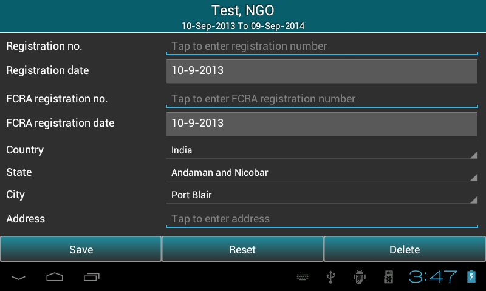
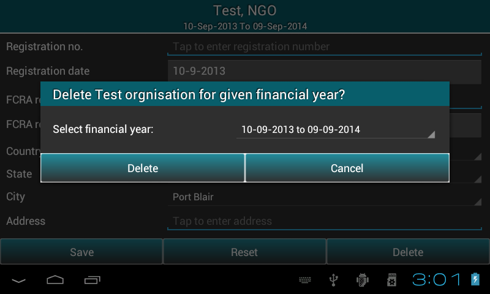
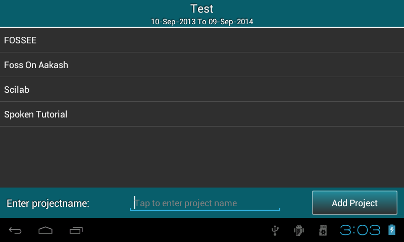
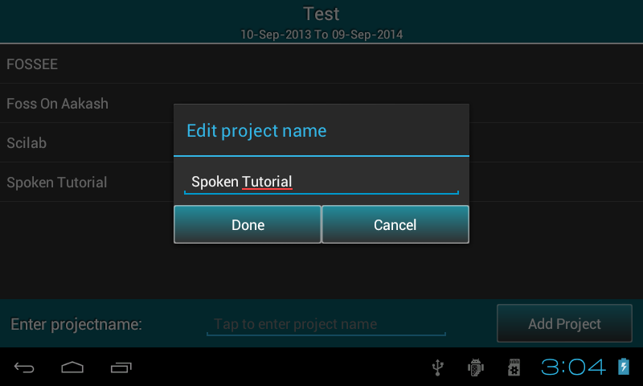

2.6. Setting up preferences
Select Preferences option from master menu to edit/delete/reset organisation details or Add/Edit/Delete project.
2.6.1. Edit/delete/reset organisation details
- Displays previously saved organisation information, all the fields are editable.

- User can edit these fields if required.
- Press Save to save the changes.
- Press Reset to clear all the fields.
- Press Delete button to delete organisation. You can also delete previous financial year of
the same organisation.

2.6.2. Add/edit/delete project
- It displays list of all projects added before.

- Add project (see figure) will help to add new project.
- Select project name from the list, it displays a popup which give two options such as edit or delete project name.

- Note: If project has transactions, it can not be deleted.